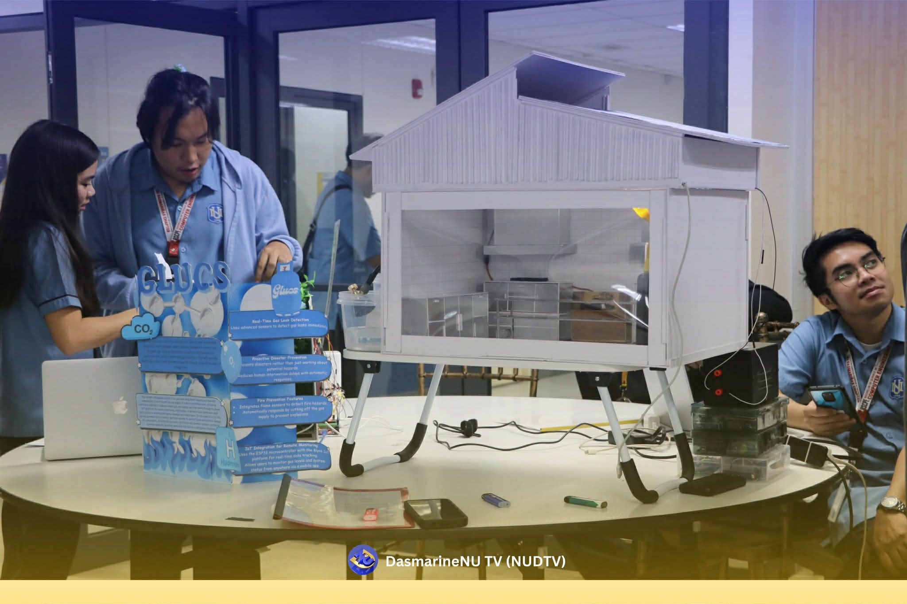
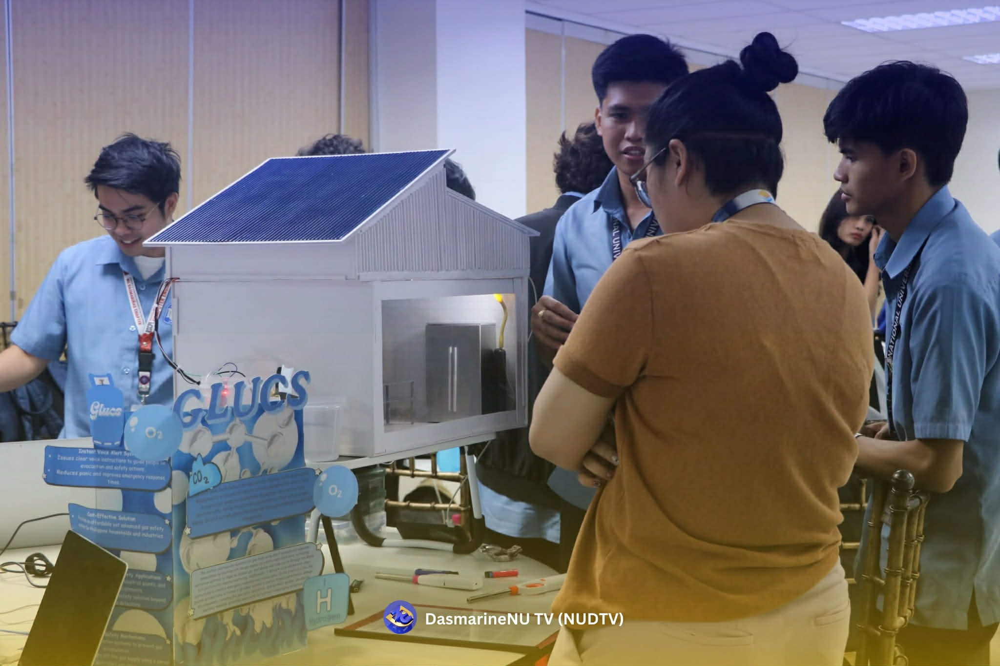
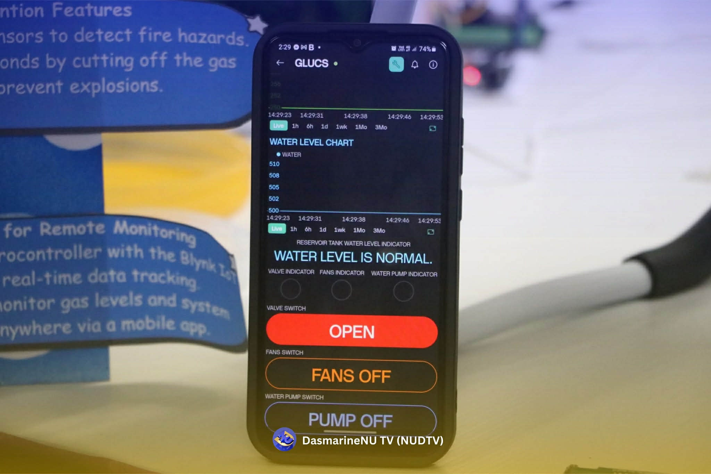
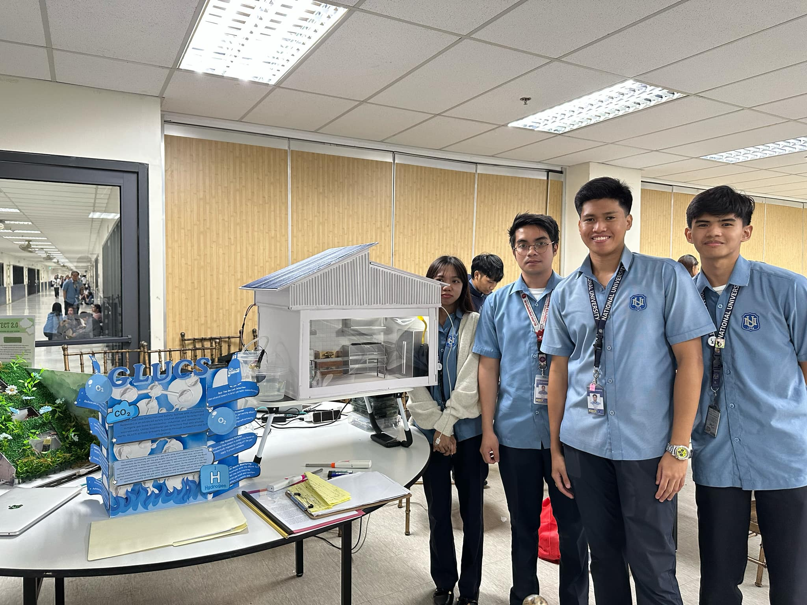
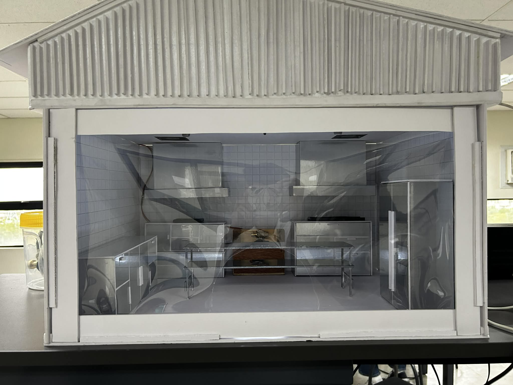
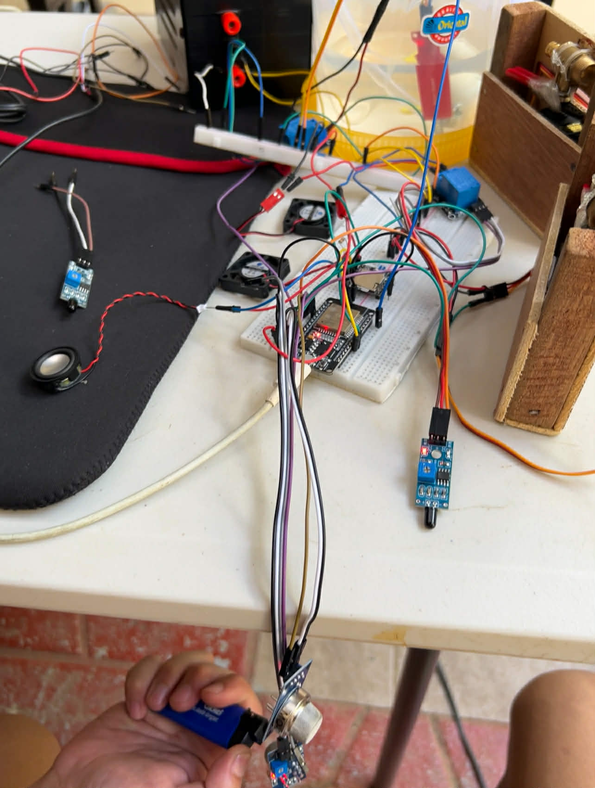

An advanced IoT-driven safety solution that detects gas leaks, smoke, and fire — providing automated mitigation through ventilation, physical valve shutdown, and intelligent voice-guided alerts.
GLUCS is a comprehensive safety mechanism engineered to address the limitations of traditional gas detectors. Developed by researchers at National University Dasmariñas, the system doesn't just alert — it acts.
By integrating the ESP32 microcontroller with high-precision sensors and automated actuators, GLUCS provides a proactive defense against residential and industrial hazards.
Powered by ESP32 Node MCU for high-speed IoT connectivity
Intelligent Voice Alarm system for guided emergency response
Automated Gas Valve shutdown via MG995 Servo mechanism
Integrated Fire Suppression with automated water pump
Remote monitoring and manual control via Blynk IoT Platform
Utilizes MQ-2 sensors to monitor air quality. Triggers ventilation and voice alarms when gas levels exceed 600 ppm or smoke density reaches critical thresholds.
Dedicated flame sensors detect infrared/ultraviolet signals from fires, immediately activating the water pump and high-speed exhaust fans for containment.
Integrated water level sensors ensure the fire suppression system is always ready, providing real-time status updates on the Blynk dashboard.
Unlike standard buzzers, the DFPlayer Mini module provides clear, step-by-step instructions for evacuation and manual gas shut-off procedures.
Real-time graphical data visualization and manual override controls for valves, fans, and pumps through a secure mobile and web interface.
The GLUCS architecture centers on the ESP32 microcontroller, which processes multi-sensor inputs to coordinate automated responses. It manages physical safety measures via relay-controlled fans and pumps, and a servo-driven gas valve, while maintaining a persistent link to the Blynk IoT cloud for user monitoring.






// ──────────────────────────────────────────────────────────────
// GLUCS – Sensor Reading Module
// Reads MQ-2 gas/smoke, flame sensor, and water level sensor.
// Called every loop() cycle; values are stored in global vars.
// ──────────────────────────────────────────────────────────────
// Pin definitions — update if you rewire the hardware
#define MQ2_PIN 34 // MQ-2 analog output → ESP32 ADC pin
#define FLAME_PIN 35 // Flame sensor analog output
#define WATER_LEVEL 36 // Water level sensor analog output
// Threshold constants — tune these during calibration
#define GAS_THRESHOLD 600 // ppm equivalent (0–4095 ADC scale)
#define FLAME_THRESHOLD 1 // 0 value = fire detected
#define WATER_LOW 500 // below this = reservoir nearly empty
// Global sensor values updated every loop()
int gasValue = 0;
int flameValue = 0;
int waterValue = 0;
// Call readSensors() at the top of loop()
void readSensors() {
gasValue = analogRead(MQ2_PIN);
flameValue = analogRead(FLAME_PIN);
waterValue = analogRead(WATER_LEVEL);
// Debug output — remove in final deployment
Serial.print("Gas: "); Serial.print(gasValue);
Serial.print(" | Flame: "); Serial.print(flameValue);
Serial.print(" | Water: "); Serial.println(waterValue);
}
void setup() {
Serial.begin(115200);
pinMode(MQ2_PIN, INPUT);
pinMode(FLAME_PIN, INPUT);
pinMode(WATER_LEVEL, INPUT);
}
void loop() {
Blynk.run();
timer.run();
timer1.run();
gas();
ext();
smoke();
}
analogRead(). All values are stored in global variables so the alarm and actuator logic can access them. The threshold constants at the top make calibration easy — adjust them after testing in your specific environment.
// ──────────────────────────────────────────────────────────────
// GLUCS – Alarm & Actuator Logic
// Decides which outputs to trigger based on sensor readings.
// Requires: gasValue, flameValue, waterValue (from sensor module)
// ──────────────────────────────────────────────────────────────
#define FAN_RELAY 13 // Relay → 2 ventilation fans
#define FAN_RELAY2 2 // Relay → 2 ventilation fans
#define PUMP_RELAY 27 // Relay → fire suppression water pump
// DFPlayer Mini over UART2 (TX=16, RX=17)
#include "DFRobotDFPlayerMini.h"
DFRobotDFPlayerMini dfPlayer;
// Audio track numbers on the SD card — rename your files to match
#define TRACK_GAS_ALARM 1 // "Gas detected! Opening ventilation..."
#define TRACK_FIRE_ALARM 2 // "Fire detected! Activating suppression..."
#define TRACK_ALL_CLEAR 3 // "Environment is safe."
bool gasAlarmActive = false;
bool fireAlarmActive = false;
// ── Gas / Smoke Logic ──────────────────────────────────────
void gas()
{
int value = analogRead(sensor);
Serial.println("Gas Level: "+value);
if(value<600)
{
digitalWrite(fan, LOW);
digitalWrite(fan1, LOW);
Blynk.virtualWrite(V4, LOW);
Blynk.virtualWrite(V1, LOW);
player.stop();
delay(1000);
}
else if(value>600)
{
myServo1.write(90);
digitalWrite(fan, HIGH);
digitalWrite(fan1, HIGH);
Blynk.virtualWrite(V4, HIGH);
Blynk.virtualWrite(V1, HIGH);
Blynk.logEvent("gas");
player.play(2);
delay(5250);
}
}
// ── Fire Alarm ────────────────────────────────────────────
void ext()
{
Flame1 = digitalRead(35);
// reading the coming signal from the flame sensor
if(Flame1 == HIGH)
{
player.stop();
digitalWrite(pump, LOW);
digitalWrite(fan, LOW);
digitalWrite(fan1, LOW);
Blynk.virtualWrite(V5, LOW);
Blynk.virtualWrite(V4, LOW);
delay(1000);
}
else if(Flame1 == LOW)
{
player.play(1);
digitalWrite(pump, HIGH);
digitalWrite(fan, HIGH);
digitalWrite(fan1, HIGH);
Blynk.virtualWrite(V5, HIGH);
Blynk.virtualWrite(V4, HIGH);
Blynk.logEvent("fire");
delay(5000);
}
}
// ── Low Water Warning ─────────────────────────────────────
void wtr()
{
int sensorValue = analogRead(waterSensorPin);
Serial.print("Sensor Value: ");
Serial.println(sensorValue);
if (sensorValue > waterThreshold) {
Serial.println("WATER LEVEL IS NORMAL.");
Blynk.virtualWrite(V2, "WATER LEVEL IS NORMAL.");
Blynk.virtualWrite(V7, sensorValue);
} else {
Serial.println("WATER LEVEL IS LOW.");
Blynk.virtualWrite(V2, "WATER LEVEL IS LOW.");
Blynk.virtualWrite(V7, sensorValue);
}
}
// ── Smoke Warning ─────────────────────────────────────
void smoke()
{
int value1 = analogRead(sensor1);
Serial.println("Smoke Value: "+value1);
if (value1<100)
{
player.stop();
digitalWrite(fan, LOW);
digitalWrite(fan1, LOW);
Blynk.virtualWrite(V4, LOW);
delay(1000);
}
else if ((value1 >= 250) && (value1 <= 500))
{
digitalWrite(fan, HIGH);
digitalWrite(fan1, HIGH);
Blynk.virtualWrite(V4, HIGH);
Blynk.logEvent("smoke");
player.play(3);
delay(5250);
}
}
gasAlarmActive / fireAlarmActive) prevent the audio and Blynk events from firing repeatedly — they trigger only on the transition from safe to unsafe, and again on recovery. Rename your SD audio files to match the track numbers defined at the top.
// ──────────────────────────────────────────────────────────────
// GLUCS – MG995 Servo Gas Valve Control
// Physically rotates the gas valve handle using the servo.
// 0° = valve OPEN (normal operation)
// 90° = valve CLOSED (emergency shut-off)
// ──────────────────────────────────────────────────────────────
#include <ESP32Servo.h> // Use ESP32Servo, NOT the standard Servo.h
Servo myServo1;
int serpin1 = 12; // Must be a PWM-capable ESP32 pin
myServo1.attach(serpin1);
myServo1.write(0);
// Angle calibration — run the test sketch below to find correct values
#define VALVE_OPEN_ANGLE 0 // degrees: fully open
#define VALVE_CLOSED_ANGLE 90 // degrees: fully closed
void setup() {
myServo1.attach(serpin1);
myServo1.write(0);
}
ESP32Servo library — if you use the standard Arduino Servo.h it will conflict with the ESP32's PWM. Run the commented calibration sketch first to discover the correct open/close angles for your valve before going to production.
// ──────────────────────────────────────────────────────────────
// GLUCS – Blynk IoT Connection & Virtual Pin Mapping
// Connects to Wi-Fi + Blynk, uploads sensor data every 2 seconds,
// and lets users manually override actuators from the mobile app.
// ──────────────────────────────────────────────────────────────
// !! REPLACE these with your actual Blynk credentials !!
#define BLYNK_TEMPLATE_ID "YOUR_TEMPLATE_ID" // from Blynk console
#define BLYNK_TEMPLATE_NAME "GLUCS"
#define BLYNK_AUTH_TOKEN "YOUR_AUTH_TOKEN" // from Blynk console
#include <WiFi.h>
#include <BlynkSimpleEsp32.h>
// !! REPLACE with your Wi-Fi network credentials !!
char ssid[] = "YOUR_WIFI_SSID";
char pass[] = "YOUR_WIFI_PASSWORD";
BlynkTimer timer; // handles scheduled uploads without blocking loop()
BlynkTimer timer1;
// Uploads live sensor readings to the Blynk dashboard
void display()
{
int value = analogRead(sensor);
Blynk.virtualWrite(V0, value);
int value1 = analogRead(sensor1);
Blynk.virtualWrite(V6, value1);
}
// Called when user taps Fan button in the Blynk app
BLYNK_WRITE(V8)
{
int fswitch = param.asInt();
if(fswitch == 0)
{
digitalWrite(fan, LOW);
digitalWrite(fan1, LOW);
}
else if(fswitch == 1)
{
digitalWrite(fan, HIGH);
digitalWrite(fan1, HIGH);
delay(5000);
}
}
// Called when user taps Pump button
BLYNK_WRITE(V9)
{
int pswitch = param.asInt();
if(pswitch == 0)
{
digitalWrite(pump, LOW);
}
else if(pswitch == 1)
{
digitalWrite(pump, HIGH);
delay(5000);
}
}
// Called when user taps Valve button
BLYNK_WRITE(V3)
{
int sw = param.asInt();
if(sw == 0)
{
myServo1.write(90);
}
else if(sw == 1)
{
myServo1.write(0);
}
}
void setup() {
Serial.begin(9600);
Blynk.begin(auth, ssid, pass);
mySerial.begin(9600);
}
void loop() {
Blynk.run(); // keeps the cloud connection alive
timer.run(); // fires the sendToBlynk() task on schedule
timer1.run(); // fires the sendToBlynk() task on schedule
}
BLYNK_WRITE() handlers. Replace all four placeholder credential strings before uploading — never commit real credentials to a public repo.
Full research paper detailing the design, implementation, testing methodology, and results of the GLUCS IoT safety system developed at National University Dasmariñas.
The ESP32 polls the MQ-2, Flame, and Water Level sensors every second to establish environmental baselines.
Data is compared against safety limits (e.g., 600 ppm for gas). If exceeded, the system enters "Emergency Mode".
The MG995 servo rotates to shut off the gas valve, while four 5V fans activate to disperse hazardous accumulations.
The DFPlayer Mini plays specific audio instructions, guiding occupants on safe evacuation and manual safety steps.
Instant alerts are pushed to the Blynk app, logging the event and allowing the user to monitor the situation remotely.
Have questions about GLUCS, the research, or want to collaborate? We'd love to hear from you. Reach out to any of the team members below, or send a message to our group email for general inquiries.
For questions about the project, replication, or academic collaboration, feel free to send us a message at our group email.
glucs.project@gmail.com